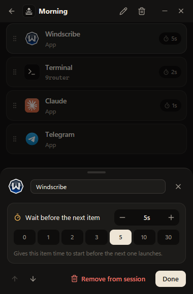

Order and timing
VPN first.
Then everything else.
Drag to set the order.
Items open from top to bottom.
Add a pause after any step,
so a slow app is ready before the next one needs it.
Honest progress.
You see what launched, what failed and why.
